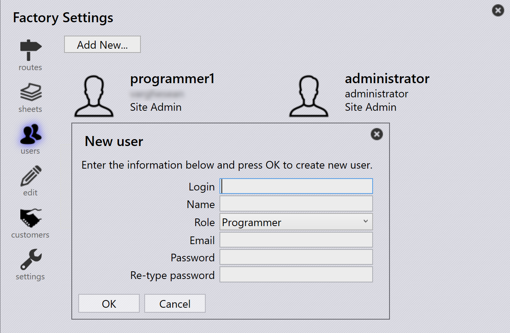

Käyttäjät
Tämä vaihtoehto mahdollistaa käyttäjien, heidän rooliensa ja niihin liittyvien käyttöoikeuksien tarkastelun ja hallinnan.

Täydelliset tiedot käyttäjärooleista, käyttöoikeuksista ja määritysvaiheista. Katso Määritä käyttäjät.
JFY Plus Reference Manual